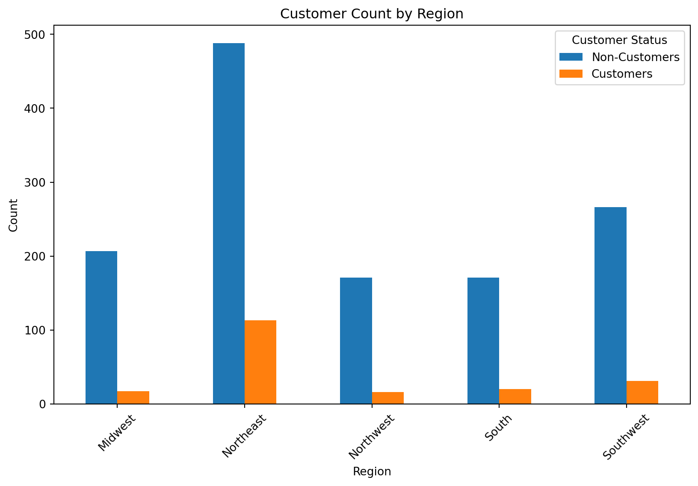

Blueprinty is a small firm that makes software for developing blueprints specifically for submitting patent applications to the US patent office. Their marketing team would like to make the claim that patent applicants using Blueprinty’s software are more successful in getting their patent applications approved. Ideal data to study such an effect might include the success rate of patent applications before using Blueprinty’s software and after using it. unfortunately, such data is not available.
However, Blueprinty has collected data on 1,500 mature (non-startup) engineering firms. The data include each firm’s number of patents awarded over the last 5 years, regional location, age since incorporation, and whether or not the firm uses Blueprinty’s software. The marketing team would like to use this data to make the claim that firms using Blueprinty’s software are more successful in getting their patent applications approved.
Data
todo: Read in data.
import pandas as pdimport numpy as npimport statsmodels.api as smimport statsmodels.formula.api as smfimport matplotlib.pyplot as pltdf_blueprinty = pd.read_csv('blueprinty.csv')df_blueprinty
Unnamed: 0
patents
region
age
iscustomer
0
1
0
Midwest
32.5
0
1
786
3
Southwest
37.5
0
2
348
4
Northwest
27.0
1
3
927
3
Northeast
24.5
0
4
830
3
Southwest
37.0
0
...
...
...
...
...
...
1495
1366
2
Northeast
18.5
1
1496
619
3
Southwest
22.5
0
1497
826
4
Southwest
17.0
0
1498
601
3
South
29.0
0
1499
602
1
South
39.0
0
1500 rows × 5 columns
todo: Compare histograms and means of number of patents by customer status. What do you observe?
mean_customers = df_blueprinty[df_blueprinty['iscustomer'] ==1]['patents'].mean()mean_non_customers = df_blueprinty[df_blueprinty['iscustomer'] ==0]['patents'].mean()print("Mean patents for customers:", mean_customers)print("Mean patents for non-customers:", mean_non_customers)import matplotlib.pyplot as pltfig, axs = plt.subplots(nrows=1, ncols=2, figsize=(12, 6), sharey=True)# Customersdf_blueprinty[df_blueprinty['iscustomer'] ==1]['patents'].hist(ax=axs[0], bins=20, color='blue', alpha=0.7)axs[0].set_title('Histogram of Patents (Customers)')axs[0].set_xlabel('Number of Patents')axs[0].set_ylabel('Frequency')# Non-Customersdf_blueprinty[df_blueprinty['iscustomer'] ==0]['patents'].hist(ax=axs[1], bins=20, color='red', alpha=0.7)axs[1].set_title('Histogram of Patents (Non-Customers)')axs[1].set_xlabel('Number of Patents')# Show the plotplt.tight_layout()plt.show()total_patents = df_blueprinty.groupby('iscustomer')['patents'].sum()total_patents.plot(kind='bar', color=['red', 'blue'])plt.title('Total Number of Patents by Customer Status')plt.xlabel('Customer Status (0 = Non-Customers, 1 = Customers)')plt.ylabel('Total Patents')plt.xticks(ticks=[0, 1], labels=['Non-Customers', 'Customers'], rotation=0) plt.show()# Based on the visualizations it is clear that there are a lot more patents for non customers as well lie on 3 patents vs the customers whose distribution is along the 4 patents as a mean which is validated by the means calculated.
Mean patents for customers: 4.091370558375634
Mean patents for non-customers: 3.6231772831926325
Blueprinty customers are not selected at random. It may be important to account for systematic differences in the age and regional location of customers vs non-customers.
todo: Compare regions and ages by customer status. What do you observe?
age_by_region_customer = df_blueprinty.groupby(['region', 'iscustomer'])['age'].mean().unstack()# Bar chart to compare average ages in each region by customer statusage_by_region_customer.plot(kind='bar', figsize=(10, 6))plt.title('Average Age by Region and Customer Status')plt.xlabel('Region')plt.ylabel('Average Age')plt.xticks(rotation=45)plt.legend(title='Customer Status', labels=['Non-Customers', 'Customers'])plt.show()#In all regions the non customers have a higher age to the customers with northwest having the most difference.customer_count_by_region = df_blueprinty.groupby(['region', 'iscustomer']).size().unstack()# Plotting the resultscustomer_count_by_region.plot(kind='bar', figsize=(10, 6))plt.title('Customer Count by Region')plt.xlabel('Region')plt.ylabel('Count')plt.xticks(rotation=45)plt.legend(title='Customer Status', labels=['Non-Customers', 'Customers'])plt.show()#For the amount of customers no customers in each region it is clear that the most promising region is northeast as it has the most customers but also non customers.

Estimation of Simple Poisson Model
Since our outcome variable of interest can only be small integer values per a set unit of time, we can use a Poisson density to model the number of patents awarded to each engineering firm over the last 5 years. We start by estimating a simple Poisson model via Maximum Likelihood.
todo: Write down mathematically the likelihood for\(Y \sim \text{Poisson}(\lambda)\). Note that \(f(Y|\lambda) = e^{-\lambda}\lambda^Y/Y!\).
Likelihood = ℓ(λ)=∑i=1n(yilog(λ)−λ−log(yi!))
todo: Code the likelihood (or log-likelihood) function for the Poisson model. This is a function of lambda and Y. For example:
import numpy as npfrom scipy.special import factorial, gammalndef poisson_loglikelihood(lambda_, Y):if lambda_ <=0:raiseValueError("Lambda must be greater than 0")# Using gammaln to compute the log factorial to avoid overflow log_likelihood = np.sum(Y * np.log(lambda_) - lambda_ - gammaln(Y +1))return log_likelihood
todo: Use your function to plot lambda on the horizontal axis and the likelihood (or log-likelihood) on the vertical axis for a range of lambdas (use the observed number of patents as the input for Y).
lambda_values = np.linspace(0.1, 10, 100)log_likelihoods = [poisson_loglikelihood(lambda_, df_blueprinty['patents']) for lambda_ in lambda_values]plt.figure(figsize=(10, 5))plt.plot(lambda_values, log_likelihoods, color='blue', linestyle='-', marker='None', linewidth=2)plt.title('Log-Likelihood of Poisson Distribution for Various Lambda')plt.xlabel('Lambda (Rate Parameter)')plt.ylabel('Log-Likelihood')plt.grid(True)plt.show()
todo: If you’re feeling mathematical, take the first derivative of your likelihood or log-likelihood, set it equal to zero and solve for lambda. You will find lambda_mle is Ybar, which “feels right” because the mean of a Poisson distribution is lambda.
todo: Find the MLE by optimizing your likelihood function with optim() in R or sp.optimize() in Python.
from scipy.optimize import minimizedef negative_poisson_loglikelihood(lambda_, Y):return-poisson_loglikelihood(lambda_, Y) # Return negative log likelihoodfrom scipy.optimize import minimize# Example observed dataY = df_blueprinty['patents'].values# Initial guess for lambdainitial_lambda = np.mean(Y)# Optimization to find the MLE for lambdaresult = minimize( fun=negative_poisson_loglikelihood, # function to minimize x0=[initial_lambda], # initial guess args=(Y,), # additional arguments for the function method='L-BFGS-B', # optimization method suitable for bounded problems bounds=[(0.001, None)] # lambda must be positive, setting a lower bound)# Check the resultif result.success: mle_lambda = result.x[0]print(f"MLE for lambda: {mle_lambda}")else:print("Optimization failed:", result.message)
MLE for lambda: 3.6846666675617414
Estimation of Poisson Regression Model
Next, we extend our simple Poisson model to a Poisson Regression Model such that \(Y_i = \text{Poisson}(\lambda_i)\) where \(\lambda_i = \exp(X_i'\beta)\). The interpretation is that the success rate of patent awards is not constant across all firms (\(\lambda\)) but rather is a function of firm characteristics \(X_i\). Specifically, we will use the covariates age, age squared, region, and whether the firm is a customer of Blueprinty.
todo: Update your likelihood or log-likelihood function with an additional argument to take in a covariate matrix X. Also change the parameter of the model from lambda to the beta vector. In this model, lambda must be a positive number, so we choose the inverse link function g() to be exp() so that\(\lambda_i = e^{X_i'\beta}\). For example:
def poisson_regression_loglikelihood(beta, Y, X):""" Compute the log likelihood for the Poisson regression model. Args: beta (numpy.ndarray): Parameter vector. Y (numpy.ndarray): Observed counts. X (numpy.ndarray): Design matrix of covariates. Returns: float: The log likelihood value. """# Calculate lambda for each observation linear_combination = X @ beta lambda_i = np.exp(np.clip(linear_combination, None, 20))# Compute the log likelihood log_likelihood = np.sum(Y * linear_combination - lambda_i - gammaln(Y +1))return log_likelihood
todo: Use your function along with R’s optim() or Python’s sp.optimize() to find the MLE vector and the Hessian of the Poisson model with covariates. Specifically, the first column of X should be all 1’s to enable a constant term in the model, and the subsequent columns should be age, age squared, binary variables for all but one of the regions, and the binary customer variable. Use the Hessian to find standard errors of the beta parameter estimates and present a table of coefficients and standard errors.
from sklearn.preprocessing import OneHotEncoder# Add the age squared termdf_blueprinty['age_squared'] = df_blueprinty['age'] **2# One-hot encode the 'region' variable, dropping the first categoryencoder = OneHotEncoder(drop='first')region_encoded = encoder.fit_transform(df_blueprinty[['region']]).toarray()# Prepare the design matrix X# Adding intercept column with onesX = np.hstack([np.ones((df_blueprinty.shape[0], 1)), df_blueprinty[['age', 'age_squared', 'iscustomer']].values, region_encoded])# Prepare the response variable YY = df_blueprinty['patents'].valuesdef negative_poisson_regression_loglikelihood(beta, Y, X):return-poisson_regression_loglikelihood(beta, Y, X)initial_beta = np.zeros(X.shape[1])# Minimize the negative log likelihoodresult = minimize( fun=negative_poisson_regression_loglikelihood, x0=initial_beta, args=(Y, X), method='L-BFGS-B', # Bounded optimization bounds=[(None, None)] * X.shape[1] # No upper bounds, but ensuring no negative infinities)if result.success:print("Optimized beta:", result.x)else:print("Optimization failed:", result.message)
todo: Check your results using R’s glm() function or Python sm.GLM() function.
import statsmodels.api as sm# Assuming df_blueprinty and X, Y are already prepared and include the necessary transformations and dummy variablesX = sm.add_constant(X) # Add an intercept to the model, if not already included# Create the Poisson model objectpoisson_model = sm.GLM(Y, X, family=sm.families.Poisson())# Fit the modelpoisson_results = poisson_model.fit()# Print the summary of the regression resultsprint(poisson_results.summary())
todo: Interpret the results. What do you conclude about the effect of Blueprinty’s software on patent success?
The coefficient for the variable representing whether a firm is a customer of Blueprinty (x3) is positive (0.1181) and statistically significant (p = 0.002). This suggests that firms using Blueprinty’s software have a higher expected count of patents, compared to firms that do not use the software. Specifically, the effect size implies that using Blueprinty’s software increases the expected count of patents by approximately 12.5% (exp(0.1181) ≈ 1.125). This is a robust statistical confirmation supporting the marketing team’s claim that Blueprinty’s software enhances the success rate of patent applications.
AirBnB Case Study
Introduction
AirBnB is a popular platform for booking short-term rentals. In March 2017, students Annika Awad, Evan Lebo, and Anna Linden scraped of 40,000 Airbnb listings from New York City. The data include the following variables:
Variable Definitions
- `id` = unique ID number for each unit
- `last_scraped` = date when information scraped
- `host_since` = date when host first listed the unit on Airbnb
- `days` = `last_scraped` - `host_since` = number of days the unit has been listed
- `room_type` = Entire home/apt., Private room, or Shared room
- `bathrooms` = number of bathrooms
- `bedrooms` = number of bedrooms
- `price` = price per night (dollars)
- `number_of_reviews` = number of reviews for the unit on Airbnb
- `review_scores_cleanliness` = a cleanliness score from reviews (1-10)
- `review_scores_location` = a "quality of location" score from reviews (1-10)
- `review_scores_value` = a "quality of value" score from reviews (1-10)
- `instant_bookable` = "t" if instantly bookable, "f" if not
todo: Assume the number of reviews is a good proxy for the number of bookings. Perform some exploratory data analysis to get a feel for the data, handle or drop observations with missing values on relevant variables, build one or more models (e.g., a poisson regression model for the number of bookings as proxied by the number of reviews), and interpret model coefficients to describe variation in the number of reviews as a function of the variables provided.